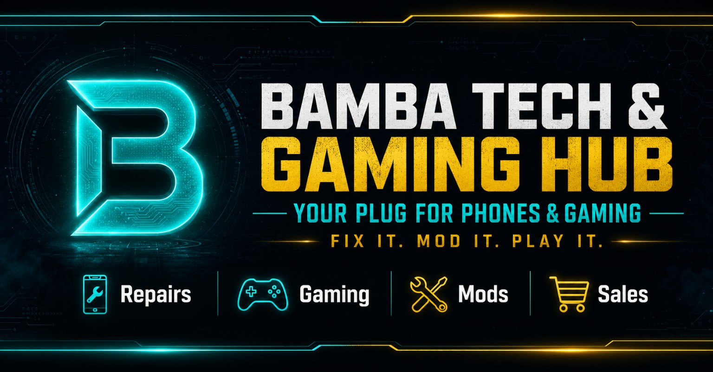

Bamba Tech & Gaming Hub
A conversational Telegram storefront transforming physical mobile repair, device flashing, and game console services into an automated intake and scheduling workflow.
← Back to selected work
What problem needs solving?
As a hands-on Mobile Software Technician and Game Console Specialist, Bamba faced operational bottlenecks: gadget repair and console software services (firmware flashing, carrier/FRP unlocking, OS formatting, console jailbreaking, and game installs) suffer from severe quoting complexity. Standard fixed prices fail because work depends on device make, fault diagnosis, and parts availability.
Conversational intake & repair workflows
Engineered @BambaShop_bot on Telegram to transform physical repair and gaming shop operations into an automated conversational workflow:
- Bot Engine: Telegraf.js handling conversational state machines, dynamic diagnosis queries, and user input validation.
- Intake Workflow: Customers submit device symptoms, receive customized diagnosis estimations, select vetted technicians, and schedule drop-offs.
- Gaming Catalog: Paginated console game browsing, accessories distribution, and customer request ticketing.
- Admin Control: Protected owner panel allowing technician availability management, queue status updates, and announcement broadcasts.
Operational modeling & edge cases
Applied structured analysis to digitize technical repair operations:
- Translated complex real-world mobile flashing, carrier unlocking, and console modification edge cases into a frictionless Telegram quote workflow.
- Designed technician allocation workflows allowing the shop owner to onboard and schedule techs seamlessly.
- Integrated a console gaming catalog with bulk upload, pagination, and customer request ticketing.
- Standardized the Bamba Bot Business Proposal to license the conversational system to independent third-party repair workshops.
What to show the reviewer
The owner-supplied promotional banner below highlights the service brand and technical capabilities (device repairs, firmware unlocking, console maintenance, and gaming sales). Verified Telegram bot handles (@BambaShop_bot) confirm the operational interface without asserting undocumented payment or financial settlement gateways.
What comes next?
Expanding the intake system with automated hardware component inventory tracking, supplier parts pricing feeds, and automated warranty tracking for completed board-level repairs.